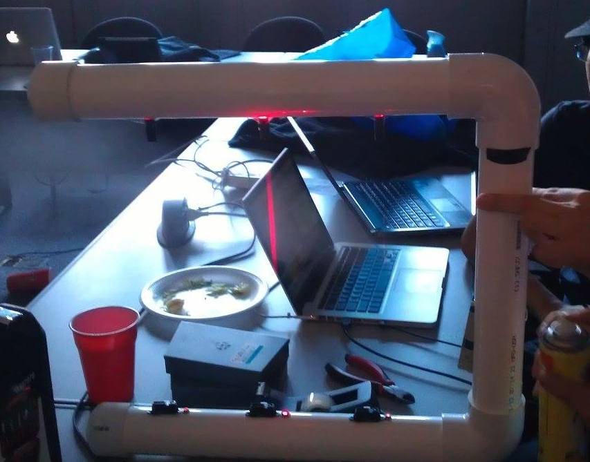

Brief Overview
We used PVC pipes to house our electronics; this also acted as the "frame" for the harp. We disassembled three laser pointer modules and mounted them on one side of the frame. Each laser was directed at a photoresistor. We also mounted three IR distance sensors on the side of the frame opposite to the lasers. All of the sensors were connected to an Arduino Mega, which was controlled to a laptop computer via USB. On the laptop, we stored various music files that were played based on the sensor readings sent from the Arduino. We wrote a Processing script to handle this logic.
When the user put his/her hand through a laser beam, it blocked the light from hitting the photoresistor, which subsequently triggered an interrupt on the Arduino. Each laser corresponded to a different frequency of dubstep music. The reading from the IR sensor was to further vary frequency as well. The photoresistor number (either 1, 2, or 3) and the reading from the IR sensor was sent to the laptop. These two numbers were combined to produce a hash that indexed into an array of music files. The approriate file was then played.
We built this project in 48 hours during HackPrinceton Fall 2012, where we won first place. Unfortunately we were all young and stupid at the time and didn't know how to use version control. Hence, there isn't a git repository for our project. Please feel free to email me for more details.
